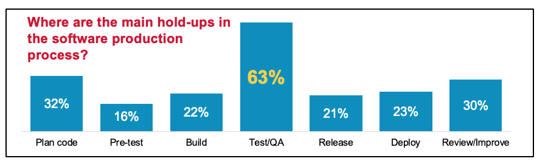
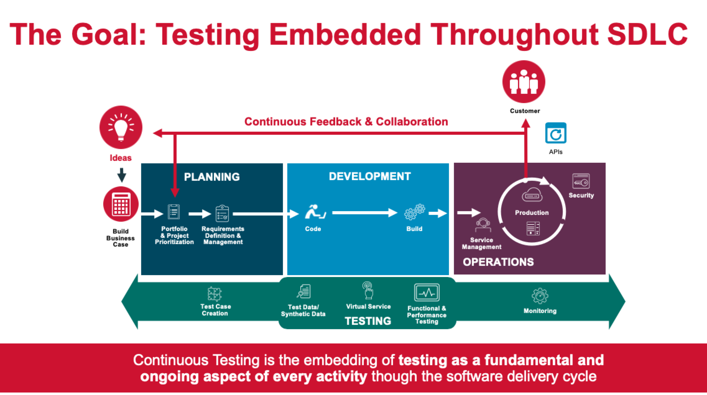

持续测试的那些事
敏捷，DevOps 和持续交付已然存在于现今每个技术人员的词汇当中。我们都想要像硅谷里的巨头和初创公司一样，敏捷开发，快速发布软件，做出创新的产品。 向敏捷转型在多方面都已有总结，并且到了能被顺利实践的程度。然而，测试仍然是一个有思想困惑和实践挑战的领域。 当软件发布周期从以年、月缩短到以周、天为单位，或者更短时； 我们该如何重塑测试实践，以保证当软件发布到生产环境时能令用户满意， 而不是掉链子？
鉴于大多数 DevOps 实践仍然把测试视为软件生产中最令人头疼的瓶颈，显然，这是一个常见的挑战。

持续测试就是答案，但持续测试究竟是什么？你又如何实现它呢？ 维基百科定义持续测试为「在软件交付流水线中执行自动化测试的过程，目的是为了获得关于预发布软件业务风险的即时反馈」。 但是这个定义缺少了本质，缺少了持续测试所示意的转变的量纲。 除了自动化是一个重要的部分以外，持续测试从根本上转变了测试， 它把线性过程中的时间点事件嵌入到整个过程当中去，作为基础贯穿于整个软件交付周期的所有活动中。
敏捷环境里持续测试的目标应该是「迭代内测试（in-sprint testing）」。 不管你的迭代是两周还是四周，目标都应该是完成迭代内所有类型的测试，这样每个迭代都可以得到一个测试完备的，准备交付的软件。 事实上很多持续交付的最佳实践都会告诉你，你不能简单的在没有持续测试的情况下去做持续交付。 如果你认为你的迭代时间不允许你去做一个综合的测试，很有可能是你对它的理解有误。

七个步骤实现持续测试
1. 尽早规划测试，甚至早于写代码
描述不清的要求或者有不正确的理解，都可能导致返工甚至延期。 使用像行为驱动开发(BDD)， 验收测试驱动开发(ATDD)和 基于模型的测试这类技术所使用的工具，如 cucumber/gherkin 和 CA Agile Requirements Designer (ARD)， 可以确保业务主管，产品经理，开发人员和测试人员充分沟通并记录需求，定义清晰的测试用例，提早编写测试脚本，以达到一个流畅的测试过程。
2. 优化测试覆盖率
一些组织默认「每次运行所有的测试」来保证代码覆盖率。这不但浪费资源还延长了测试周期，而且没有真正的保证代码覆盖率。 测试那些需要测试的部分，以节省时间、金钱和资源。可视化模型可以让各种路径被探索优化，以便只用少量的测试用例就能提供最大化的覆盖率。 可以借助 Rally, Jira, HP ALM, JIRA 等此类工具导入测试用例、移除重复用例、分发优化过的用例。
3. 测试左移
为了实现「迭代内(in-sprint)」测试，将测试前置——这样测试可以在开发周期的早期运行。开发人员自己测自己的；卓越中心提供专家，定制系统和服务。 自动化测试覆盖 UI, 功能，性能和安全。各个团队一起工作，一起以要交付给客户的业务价值为专注点。这需要对开发者友好的工具以及文化转变。
4. 提供完整的测试环境
提供测试环境的能力对实现持续测试是至关重要的。 通过友好型（例如编码、CI/CD 集成、被开源支持的软件）开发工具按照需求提供的完整的测试环境来消除障碍和减少等待时间。 这些环境应该包括：
- 虚拟服务——给那些不可达，不可访问的，还在开发中的服务提供鲁棒的模拟。开发和测试可以根据虚拟服务模拟实际服务返回的结果持续并行工作。
- 按照需求测试数据——帮助并保证各个团队可以使用与生产环境类似的数据来运行综合的测试。
- 预发环境——准备上线的需求，使用后退役。
5. 获取正确的测试数据
在很多应用发布周期，获取鲁棒性测试数据能力的缺乏会造成严重延期。为了准确的测试新功能，测试数据应该尽可能的跟生产环境时所应用遇到的数据相近。 如果测试数据缺乏特定真实世界的特征（例如具体字段、数据定义、负面场景等），测试就很难找到许多潜在问题和应用的弱点。 理解数据模型并提取出正确的数据是一种特殊的技巧。尽管使用生产环境数据测试是最接近真实的，但数据隐私条例通常都会限制使用生产数据。 下面，我们来看看 CA Test Data Manager 是如何复制生产数据，抹掉敏感信息的同时保持了测试所希望的生产数据特征（接近现实，并且多行指征完整）的。 生产数据不可用时，测试数据也可以使用 TDM 工具根据模版生成。
6. 别忘了测试右移
测试向右移动，使用开发周期和生产中的数据来优化测试周期、调整测试用例，以建立最佳回归套装。右移技术包括真实用户监控、金丝雀部署、A/B 测试、混沌工程等。 例如，通过测试右移，你可以确定哪些功能被用于生产，保证回归测试覆盖能够这些功能。 同样的方法，你可以开放新功能给一小部分人（内部或外部），了解新功能可能给生产造成的影响，按需调整。 许多敏捷公司例如 Facebook 和 Netflix 都严重依赖测试右移。 Gartner（美国一家从事信息技术研究和顾问的公司）最近发布了一份测试右移的报告， 声称测试右移对 DevOps 实践来说是「必需」的。
7. 使用数据矩阵持续优化
建立跨团队协作，根据可行性分析和反馈机制不断优化。持续交付和持续测试就像旅行。确保你的所有团队都有 KPI, 查阅那些能够提供附加优化的数据。 不要只是收集数据，那很容易办到，收集并且总结数据能够帮助你提出持续优化的确切建议。探索应用发布流程以实施建议，并作为所有团队应用交付周期的「单一事实来源」。
要了解更多关于持续测试的挑战和实践，点击这里 CT Academy Video Series.